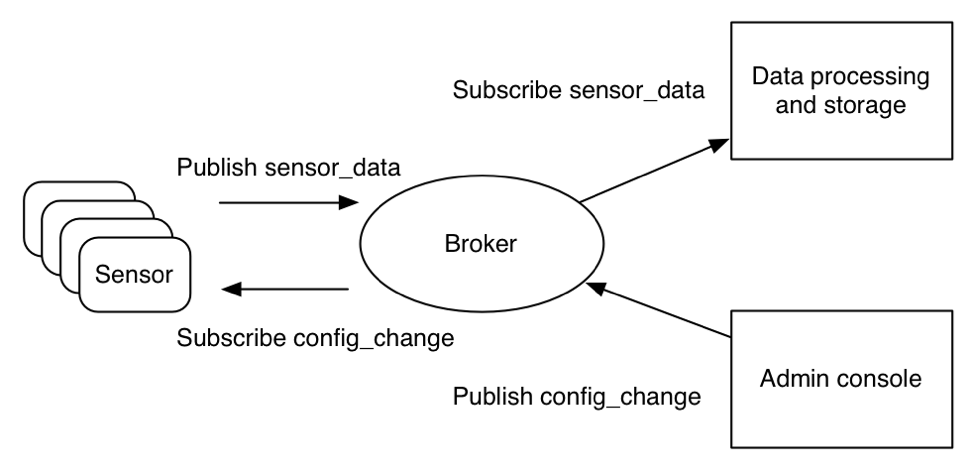

MQTT简介
MQTT(Message Queuing Telemetry Transport)是基于二进制消息的发布/订阅编程模式的消息协议。MQTT的出现是因为传统的http不适合物联网的场景，所以用的是发布/订阅（Publish/Subscribe）模式取代请求/回答（Request/Response）模式

遵循的设计原则
- 精简，不添加可有可无的功能。
- 发布/订阅（Pub/Sub）模式，方便消息在传感器之间传递。
- 允许用户动态创建主题，零运维成本。
- 把传输量降到最低以提高传输效率。
- 把低带宽、高延迟、不稳定的网络等因素考虑在内。
- 支持连续的会话控制。
- 理解客户端计算能力可能很低。
- 提供服务质量管理。
- 假设数据不可知，不强求传输数据的类型与格式，保持灵活性。
发布/订阅模式
与请求/回答这种同步模式不同，发布/定义模式解耦了发布消息的客户（发布者）与订阅消息的客户（订阅者）之间的关系，这意味着发布者和订阅者之间并不需要直接建立联系。打个比方，http是打电话给客户(需要响应才能通话)，而mqtt是发邮件给客户(异步，不需要响应)。
这种模式带来了这些好处：
- 发布者与订阅者不比了解彼此，只要认识同一个消息代理即可。
- 发布者和订阅者不需要交互，发布者无需等待订阅者确认而导致锁定。
- 发布者和订阅者不需要同时在线，可以自由选择时间来消费消息。
主题
MQTT是通过主题对消息进行分类的，本质上就是一个UTF-8的字符串，不过可以通过反斜杠表示多个层级关系。主题并不需要创建，直接使用就是了。
主题还可以通过通配符进行过滤。其中，+可以过滤一个层级，而*只能出现在主题最后表示过滤任意级别的层级。 举个例子：
- building-b/floor-5：代表B楼5层的设备。
- +/floor-5：代表任何一个楼的5层的设备。
- building-b/*：代表B楼所有的设备。
注意，MQTT允许使用通配符订阅主题，但是并不允许使用通配符广播。
服务质量
为了满足不同的场景，MQTT支持三种不同级别的服务质量（Quality of Service，QoS）为不同场景提供消息可靠性：
级别0：尽力而为。消息发送者会想尽办法发送消息，但是遇到意外并不会重试。级别1：至少一次。消息接收者如果没有知会或者知会本身丢失，消息发送者会再次发送以保证消息接收者至少会收到一次，当然可能造成重复消息。级别2：恰好一次。保证这种语义肯待会减少并发或者增加延时，不过丢失或者重复消息是不可接受的时候，级别2是最合适的。
级别2所提供的不重不丢很多情况下是最理想的，不过往返多次的确认一定对并发和延迟带来影响。级别1提供的至少一次语义在日志处理这种场景下是完全OK的，所以像Kafka这类的系统利用这一特点减少确认从而大大提高了并发。级别0适合鸡肋数据场景
消息类型
MQTT拥有14种不同的消息类型：
- CONNECT：客户端连接到MQTT代理
- CONNACK：连接确认
- PUBLISH：新发布消息
- PUBACK：新发布消息确认，是QoS 1给PUBLISH消息的回复
- PUBREC：QoS 2消息流的第一部分，表示消息发布已记录
- PUBREL：QoS 2消息流的第二部分，表示消息发布已释放
- PUBCOMP：QoS 2消息流的第三部分，表示消息发布完成
- SUBSCRIBE：客户端订阅某个主题
- SUBACK：对于SUBSCRIBE消息的确认
- UNSUBSCRIBE：客户端终止订阅的消息
- UNSUBACK：对于UNSUBSCRIBE消息的确认
- PINGREQ：心跳
- PINGRESP：确认心跳
- DISCONNECT：客户端终止连接前优雅地通知MQTT代理
MQTT的实现
推荐参考两种mqtt协议的实现：